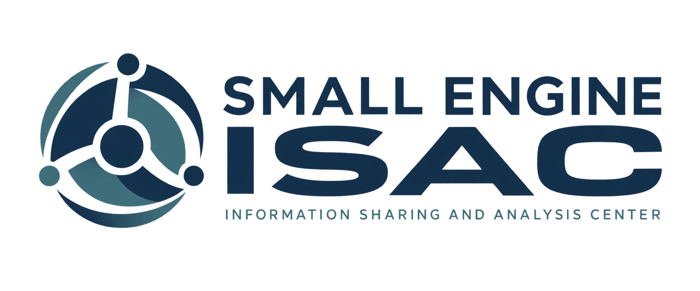

Industry intelligence
A clearer view of engine technologies, market demand, supplier capacity, and emerging requirements.
- Engine and technology intelligence
- Market and regulatory developments
- Reliability and field experience

Connecting the knowledge, intellectual property, and production capacity behind the next generation of small propulsion systems.
Read the white paperThe Small Engine ISAC is a proposed private, member-led center for the small propulsion industry, with an initial focus on drones and unmanned aircraft systems.
Members would bring together technical knowledge, market insight, and manufacturing expertise to make better decisions, find qualified partners, and build resilient production networks.
Practical information and relationships that help turn engine capability into available products.
A clearer view of engine technologies, market demand, supplier capacity, and emerging requirements.
Connections between technology owners and the partners who can manufacture, integrate, and commercialize their products.
Better visibility into the people, facilities, and supply chains needed to deliver dependable propulsion.
Make local production a practical path to new markets.
The ISAC would help members identify IP and product licensing opportunities, connect with qualified production partners, and understand the requirements for manufacturing in their target countries.
This includes U.S. technology licensed internationally, foreign engine designs produced in the United States, and partnerships between other participating countries.
Shared resources and specialist connections would support ITAR, EAR, and relevant foreign controls alongside qualification, configuration, and local-content requirements.
Comparable engine profiles with clear sources, dates, and performance definitions.
Member-submitted opportunities for IP licensing, product rights, and production partnerships.
Profiles of production capabilities, suppliers, and test and qualification resources.
Planned pilot resources. Access and contribution rules would be established with founding members.
Designed for engine developers, manufacturers, suppliers, integrators, universities, and laboratories.
| Membership | Annual organization revenue | Annual dues |
|---|---|---|
| Emerging | Under $5 million | $2,500 |
| Small | $5 million to under $25 million | $5,000 |
| Growth | $25 million to under $100 million | $10,000 |
| Industry | $100 million to under $1 billion | $20,000 |
| Strategic | $1 billion and above | $35,000 |
Replaces base membership dues.
Connect research with industry.
Connect testing and technical capability.
All tiers would include core intelligence, member profiles, opportunity listings, introductions, and working groups. Dues and benefits are proposals subject to founding-member review.
Read the proposed operating model, membership structure, and 90-day pilot in the Small Engine ISAC white paper.